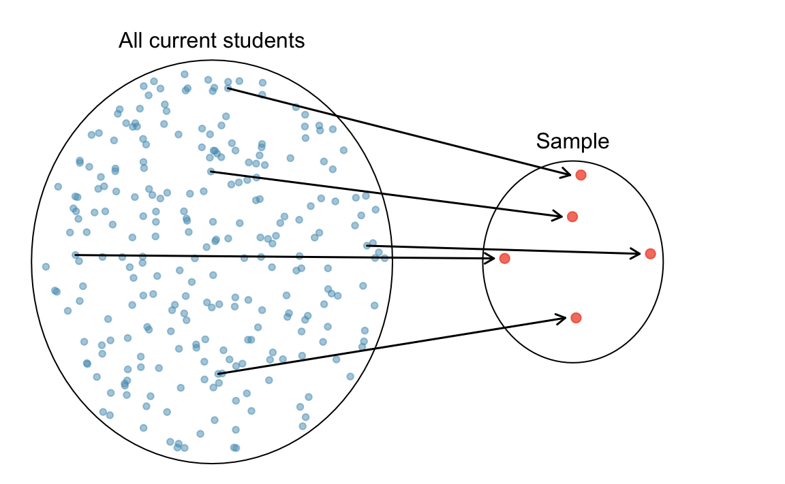
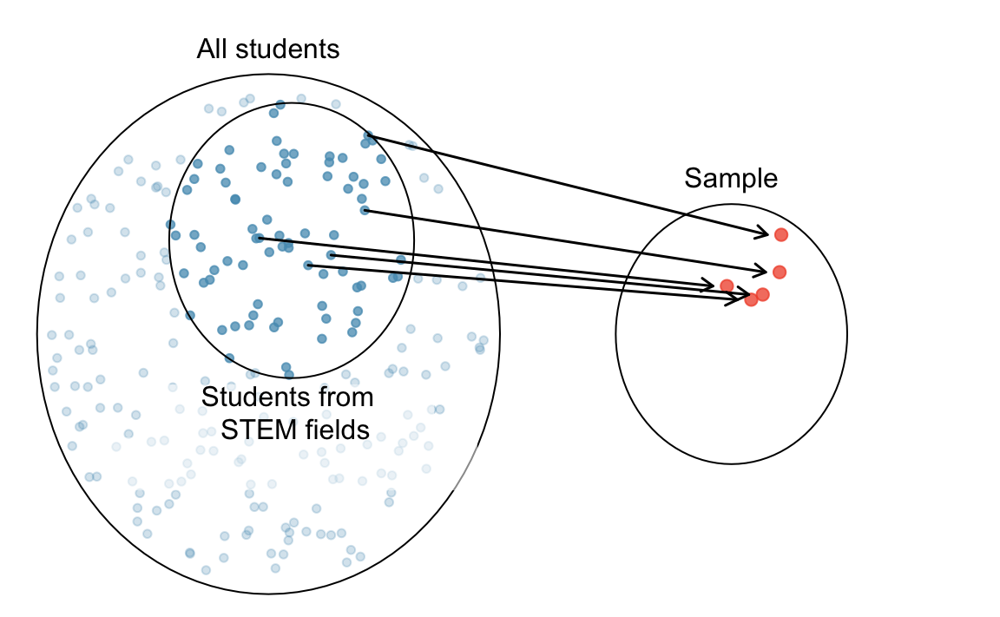
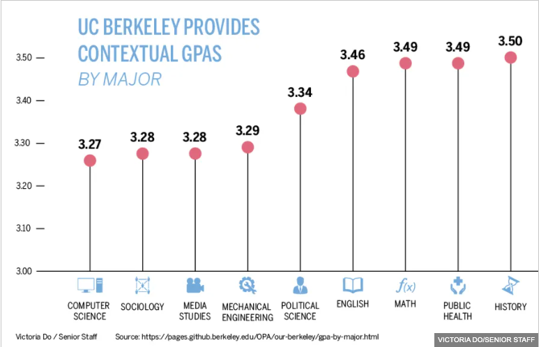

2 Data Collection and Data Type
Statistics is a science of data. If statistics should be viewed as a subset of the boarder data science, I would call it “statistical data science”. As the name suggests, data is the core of modern statistics. In this chapter, we define data, and talk about data collection and data type.
2.1 Data
What is Data?
Because statistics is a science of data, we first understand what data is. Data can be described as a set of objects on which we observe or measure one or more characteristics. Objects are individuals, observations, subjects or cases in statistical studies. For example, if you are studying the Marquette students’ heights and weights, your objects will be human beings, specifically the Marquette students. If you are interested in SUV car price, your subjects will be cars. A characteristic or attribute is also called a variable because it varies from one object to another. Your car data set may contain 10 car objects and 5 different characteristics or variables associated with each object, such as color, brand, weight, price, etc. Each car has its own value of those variables.
We usually store a data set in a matrix form that has rows and columns. Sometimes we call such data set data matrix or data frame. Each row corresponds to a unique case or observational unit. Each column represents a characteristic or variable. This data matrix structure allows new cases to be added as rows or new variables to be added as columns.
Example
Figure 2.1 below is a data set of Marquette basketball players stored in matrix form. The objects are individuals or players in the data and each have their own associated row. Each player has several characteristics or attributes shown in the columns associated with them. These include jersey number, class, position, height, weight, hometown and high school. These characteristics can also be referred to as variables because they vary from one player to another.
2.2 Population and Sample
Target Population
The data set we collect for analysis is usually a sample of some target population in the study. The first step in conducting a study is to identify questions to be investigated. A clear research question is helpful in identifying
- what cases should be studied (row)
- what variables are important (column)
Once the research question is determined, it is important to identify the target population to be investigated. The target population is the complete collection of data we’d like to make inference about. Look at the following examples.
GPA Example
Suppose a Marquette professor has a research question: What is the average GPA of currently enrolled Marquette undergraduate students?
The target population in this study is All Marquette undergraduate students that are currently enrolled. because all Marquette undergrads that are currently enrolled are the complete collection of data we’d like to make inference about or we are interested in some property or characteristic of these group of people. Each currently enrolled Marquette undergraduate student is an object in the population. Average GPA is the variable or population property we would like to make an inference about.

Note
Students who are not currently enrolled or students that have already graduated are not our interest, so they shouldn’t be a part of target population.
Heart Disease Example
Does a new drug reduce mortality in patients with severe heart disease? If this is our research question, the target population is All people with severe heart disease. Mortality is the variable or population property we would like to make an inference about.
Do you think it is possible the apply the new drug to all the patients with severe heart disease, and obtain the mortality we are interested?

Sample Data
In some cases it‚Äôs possible to collect data of all the cases we are interested in. However, most of the time it is either too expensive or too time consuming to collect data for every case in a population. What if we tried to collect data on the average GPA of all students in Illinois? The U.S.? The world? üò± üò± üò±
When we are not able to collect all the cases in the target population due to some budget or time constraint, but we still want to learn about the population property, our solution is sampling cases from the target population. A sample is a subset of cases selected from a population.
We are not able to collect the average GPA of every member of the population, but we can collect a sample from that population which has fewer objects (Figure 11.1). We can then compute the average GPA of the sample data.

We hope that the average GPA of the sample is close to the average GPA of the population, which is our main interest. For the sample’s average GPA to be close to population’s average GPA, we want the sample to look like the population such that they share similar attributes including GPA. In other words, we hope the sample is a small size of everything in the population, and the sample is representative of the population. Ideally, a sample is the small size of some dish and the population is the large size of that dish.
Good Sample vs. Bad Sample
Of course, every member in the class is a Marquette student, so the class is a subset of the population Marquette students. Let me ask you another question.
Remember a good sample should well represent the target population. Do you think the class is generally a small version of the entire Marquette student body? The sample is convenient to be collected, but as Figure 2.3 shows, it is NOT representative of the population. Because this class is primarily composed of STEM majors, it may not share the attributes necessary with the target population for the two to share a similar average GPA. We call this kind of sample a biased sample. The average GPA of the class may differ greatly from the average GPA of all Marquette undergrads.


If the biased sample has no or tiny impact on the population attribute we’d like to discover, we are lucky, and the issue is not serious. However, if the sample is biased in a way that the attribute we get from the sample is quite different from that of the population, then we miss the mark. In the GPA example, if the average GPA depends on students major, the sample that is biased in students’ major causes a trouble.
As shown in Figure 2.5, the average GPA differs based on students’ majors. Because this class consists of mostly STEM majors, it is likely that the average GPA of its students is not the same as the average GPA of all Marquette undergraduates. Figure 2.4 depicts that sampling needs to be done appropriately to ensure the sample is representative of the population.

How do we collect a representative sample? We always seek to randomly select a sample from a population. Every member in the target population should be treated equally, and preferably has equal chance to be chosen in the sample. If you just collect data from STEM fields, we miss the information provided by students from arts, humanities, and other non-STEM majors. Random sampling usually give us a representative sample, as long as the sample size, the number of objects in the sample, is not too small. It is important to collect samples this way because many statistical methods are based on the random sampling assumption.
2.3 Data Collection
In this section, we briefly discuss how data can be collected.
Two Types of Studies to Collect Sample Data
There are two types of studies that are used to collect data: observational studies and experimental studies.
An observational study is a study in which those collecting the data observe and measure characteristics/variables, but do NOT attempt to modify or intervene with the subjects being studied.
- Example: Sample from 1️⃣ the heart disease and 2️⃣ heart disease-free populations and record the fat content of the diets for the two groups. In this type of study, the researchers do not modify or intervene with the the subjects either with or without heart disease. They just record the fat content in their diets.
The other type of study is called the experimental study. In an experimental study, some treatment(s) is applied and then those collecting data proceed to observe its responses or effects on the individuals, the experimental units in such study.
- Example: Assign volunteers to one of several diets with different levels of dietary fat and compare the fat levels with respect to the incidence of heart disease after a period of time. In this experimental study, the treatment is the fat level in diets. The researchers do not just observe the subjects behavior. Instead, they ask the subjects to take a specific diet they design for a period of time.
Limitation of Observational Studies: Confounding Variables
One limitation of observational studies is confounding. A confounder is a variable that is not included in a study, but affects the variables in the study. For example, a person observes past data showing that increases in ice cream sales are associated with increases in drownings and concludes that eating ice cream causes drownings. üò±üòï‚ÅâÔ∏è


- As temperature increases, ice cream sales increase and the number of drownings also rises because more people go swimming (Figure 2.6).

Making causal conclusions based on experimental data is often more reasonable than making the same causal conclusions based on observational data. Observational studies are generally only sufficient to show associations, not causality.
Types of Random Samples
As previously mentioned, many statistical methods are based on the randomness assumption. It’s important to understand what a random sample is and how to collect it. In a random sample, each member of a population is equally likely to be selected.
Simple Random Sample
For a simple random sample (SRS), every possible sample of sample size \(n\) has the same chance to be chosen.
- Example: If I were to sample 100 students from all 10,000 Marquette students, I would randomly assign each student a number (from 1 to 10,000) and then randomly select 100 numbers.


Stratified Random Sample
For stratified sampling, we subdivide the population into different subgroups (strata) that share the same characteristics, then draw a simple random sample from each subgroup. Stratified sampling has a property: Homogeneous within strata; Non-homogeneous between strata. (Figure 2.9)
- Example: Divide Marquette students into groups by colleges, then perform a SRS for each group (Figure 2.10). In this case, subjects within strata are homogeneous because people in the same stratum belong to the same college. Subjects are non-homogeneous between strata because students in one college is not a student in another college.

Cluster Sampling
For cluster sampling, divide the population into clusters, then randomly select some of those clusters, and then keep all the members from those selected clusters. Cluster sampling has a property: Homogeneous between clusters; Non-homogeneous within clusters (Figure 2.11). Clusters look similar each other, but members in a cluster are not very alike. They have different characteristics.

- Example: Study 4720 students’ drinking habits by dividing the students into 9 groups, and then randomly selecting 3 and interviewing all of the students in each of those clusters (Figure 2.12). Subjects are homogeneous between clusters because clusters are like random partitions, and each one is a representative subset of the entire population. Subjects are non-homogeneous within clusters because everyone has their own characteristics, and subjects are not divided based on any characteristic such as major or college.

2.4 Data Type
OK. We learn data collection and sampling methods. Now’s let’s learn some data types. Usually a statistical method is only for some type of data or variables. Knowing data types is important because it helps us choose the correct or appropriate statistical methods for analysis. It also helps us interprets the analysis result correctly. Figure 2.13 tells us everything about data type. We are going to learn each data type in the figure.

Categorical vs. Numerical Variables
A categorical variable provides non-numerical information which can be placed in one (and only one) category from two or more categories. Here are some examples.
- Gender (Male üë®, Female üë©, Trans üè≥Ô∏è‚Äçüåà)
- Class (Freshman, Sophomore, Junior, Senior, Graduate)
- Country (USA üá∫üá∏, Canada üá®üá¶, UK üá¨üáß, Germany üá©üá™, Japan üáØüáµ, Korea üá∞üá∑)
Gender, Class, and Country are all categorical variables because they provide non-numerical information. Their possible “values” are “categories”. Keep in mind that a data object can only belong to one category of that variable. You cannot be a freshman and sophomore.
A numerical variable is recorded in a numerical value representing counts or measurements. Some examples are
- GPA
- The number of relationships you’ve had
- Height
The possible values of the three variables are all numerical or numbers. You are a 6’2” tall student who had eight girlfriends and your GPA is 3.98.
Numerical Variables
Numerical variables can be discrete or continuous. A discrete variable takes on values of a finite or countable number, while a continuous variable takes on values anywhere over a particular range without gaps or jumps.
GPA is continuous because theoretically it can be any value between 0 and 4.
The number of relationships you’ve had is discrete because you can count the number and it is finite. The possible values are 0, 1, 2, 3, and so on. Can you have a 0.5 relationship?
Height is continuous because it can be any number within a range.
Categorical Variables
For convenience, categorical variables are usually recorded as numbers in a data set. For example, we can have
Gender (Male = 0, Female = 1, Trans = 2)
Class (Freshman = 1, Sophomore = 2, Junior = 3, Senior = 4, Graduate = 5)
Country (USA = 100, Canada = 101, UK = 200, Germany = 201, Japan = 300, Korea = 301)
Even United Airlines boarding group is categorical. The group number does provide non-numerical information, which is the order of boarding. You cannot be in both boarding zone one and zone two for the same ticket. You can only be in one group.
Please note that the numbers represent categories only; taking differences of these numbers is meaningless. If we use the coding scheme in the examples,
- Canada - USA = 101 - 100 = 1???
- Graduate - Sophomore = 5 - 2 = 3 = Junior???
The arithmetic operations do not make sense. For any data or variables, we need to learn the level of measurements to know which arithmetic operations are meaningful for what type of data.
Levels of Measurements
Nominal and Ordinal for Categorical Variables
A categorical variable can be of nominal or ordinal level of measurement.
The data is nominal if can not be ordered in a meaningful or natural way. For example,
Gender (Male = 0, Female = 1, Trans = 2) is nominal because Male, Female and Trans cannot be ordered, even the numbering coding has an ordering.
Country (USA = 100, Canada = 101, UK = 200, Germany = 201, Japan = 300, Korea = 301) is nominal. There is no reason to put any country before any other country unless there is another variable giving those countries another attribute that can be ordered.
Ordinal data can be arranged in some meaningful order, but differences between data values can NOT be determined or are meaningless.
- Class (Freshman = 1, Sophomore = 2, Junior = 3, Senior = 4, Graduate = 5) is ordinal because Sophomore is one class higher than Freshman, and so on. Here the difference is still meaningless. It seems that Junior is one year higher than Sophomore, and Junior - Sophomore = 1 kind of makes sense. However, “1” does not mean one year higher; instead “1” means Freshman. Moreover, we could even use the numbering (Freshman = 1, Sophomore = 10, Junior = 33, Senior = 44, Graduate = 50) for the Class variable.
Interval and Ratio for Numerical Variables
Numerical data can be interval or ratio level of measurement.
Interval data have meaningful differences between any two values but the data do NOT have a natural zero or starting point. The data can do \(\color{red} +\) and \(\color{red} -\), but can’t reasonably do \(\color{red} \times\) and \(\color{red} \div\).
- Temperature is interval because \(80^{\circ}\)F is 40 degrees higher than \(40^{\circ}\)F \((80-40=40)\), but \(0^{\circ}\) does not mean NO heat or NO temperature, but a specific temperature. Also, \(80^{\circ}\)F is NOT twice as hot as \(40^{\circ}\)F.
Ratio data have both meaningful differences and ratios, and there is a natural zero starting point that indicates none of the quantity. The data can do \(\color{red} +\), \(\color{red} -\), \(\color{red} \times\) and \(\color{red} \div\).
- Distance is ratio level of measurement because \(80\) miles is twice as far as \(40\) miles \((80/40 = 2)\), and \(0\) mile means NO distance.
Converting Numerical to Categorical
Sometimes research purpose we may want to convert a numerical variable into a categorical variable. Figure 2.14 is an example of turning a 100% percentage grade into a letter grade which is categorical. Another is example is turning annual salary (numerical) into income level (categorical). We can say salary between $0 and $50,000 is “low” income level, salary between $50,000 and $120,000 is “middle” income level, and above $120,000 is “high” income level.
| Grade | Percentage |
|---|---|
| A | [94, 100] |
| A- | [90, 94) |
| B+ | [87, 90) |
| B | [83, 87) |
| B- | [80, 83) |
| C+ | [77, 80) |
| C | [73, 77) |
| C- | [70, 73) |
| D+ | [65, 70) |
| D | [60, 65) |
| F | [0, 60) |
Practice
2.5 Exercises
-
Data Type: Identify each of the following as numerical or categorical data.
- The names of the companies that manufacture paper towels
- The colors of cars
- The heights of football players
-
Level of Measurements: Identify the level of measurement used in each of the following.
- The weights of people in a sample of people living in Milwaukee.
- A physician’s descriptions of “abstains from smoking, light smoker, moderate smoker, heavy smoker.”
- Flower classifications of “rose, tulip, daisy.”
- Suzy measures time in days, with 0 corresponding to her birth date. The day before her birth is -1, the day after her birth is +1, and so on. Suzy has converted the dates of major historical events to her numbering system. What is the level of measurement of these numbers?
-
Discrete vs Continuous: Determine whether the data are discrete or continuous.
- The length of stay (in days) for each COVID patient in Wisconsin.
- Several subjects are randomly selected and their heights are recorded.
- From a data set, we see that a male had an arm circumference of 31.28 cm.
- A sample of married couples is randomly selected and the number of animals in each family is recorded.
-
Sampling Method: Identify which of these types of sampling is used: random, stratified, or cluster.
- Dr. Yu surveys his statistics class by identifying groups of males and females, then randomly selecting 7 students from each of those two groups.
- Dr. Yu conducts a survey by randomly selecting 5 different sports teams at Marquette and surveying all of the student-athletes on those teams.
- 427 subjects were randomly assigned to (1) meditation or (2) no mediation group to study the effectiveness of this mindfulness activity on lowering blood pressure.
-
Study Type: Determine whether the study is an experiment or an observational study, then identify a major problem with this study.
- In a survey conducted by USA Today, 998 Internet users chose to respond to the question:“How often do you seek medical advice online?” 42% of the respondents said “frequently.”
- The Physicians’ Health Study involved 21,045 female physicians. Based on random selections, 11,224 of them were treated with aspirin and other other 9,821 were given placebos. The study was stopped early because it became clear that aspirin did not reduce the risk of myocardial infarctions by a substantial amount.